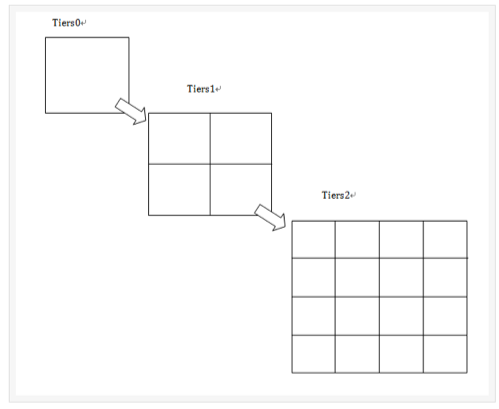
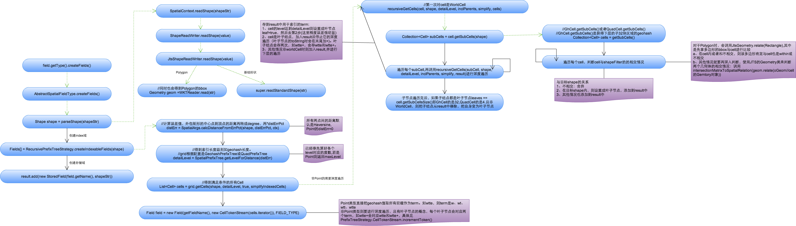
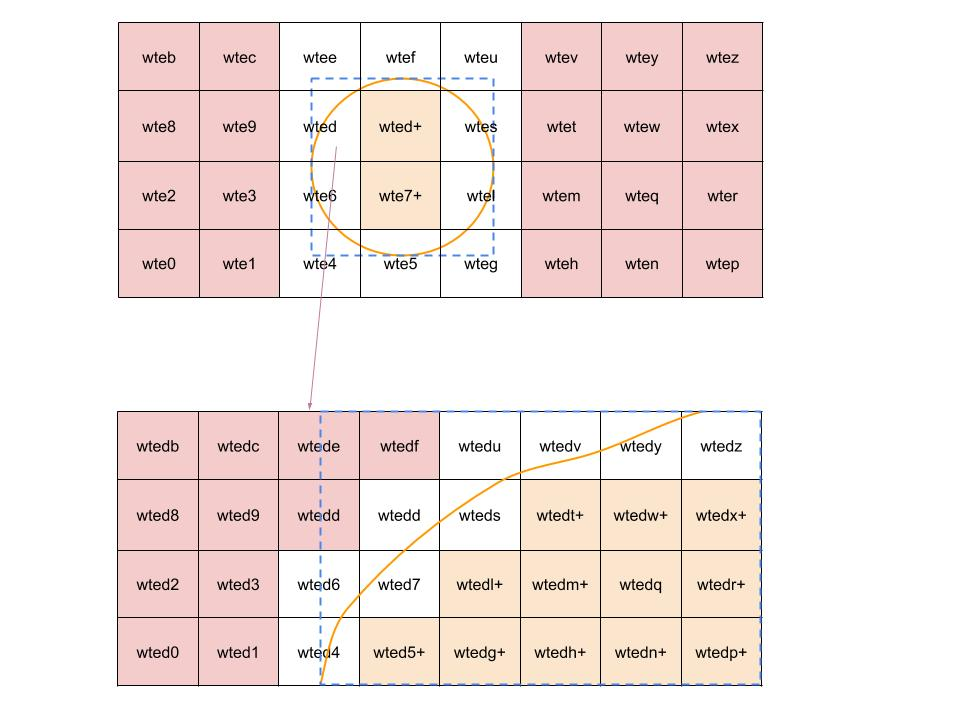
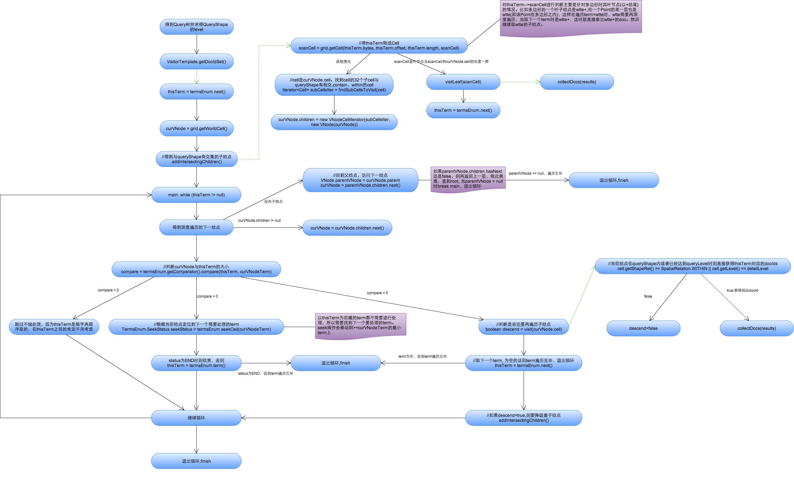
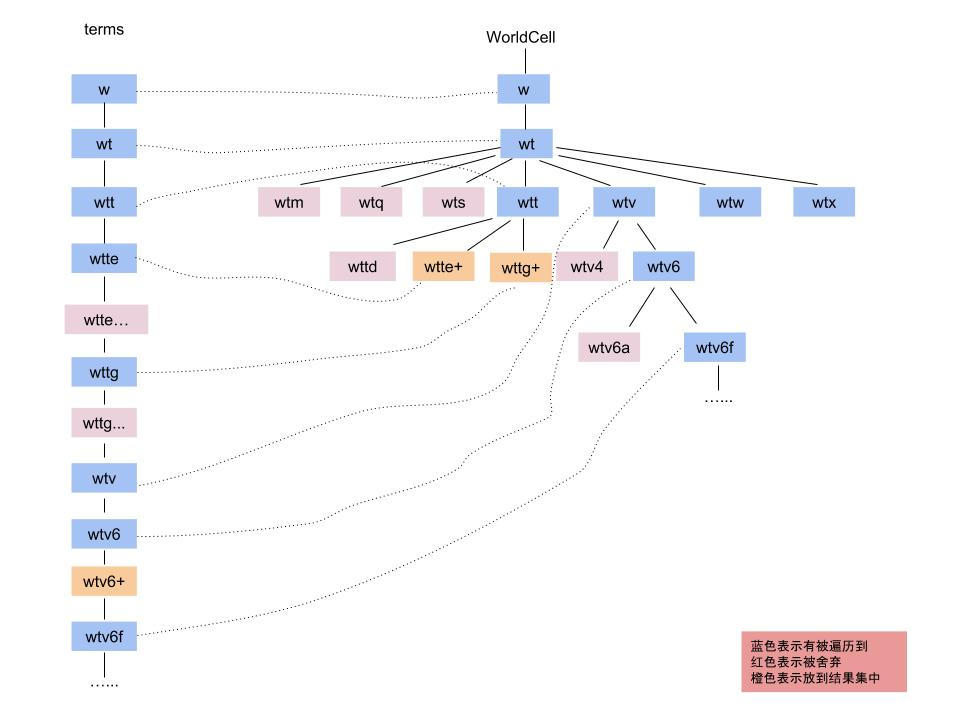
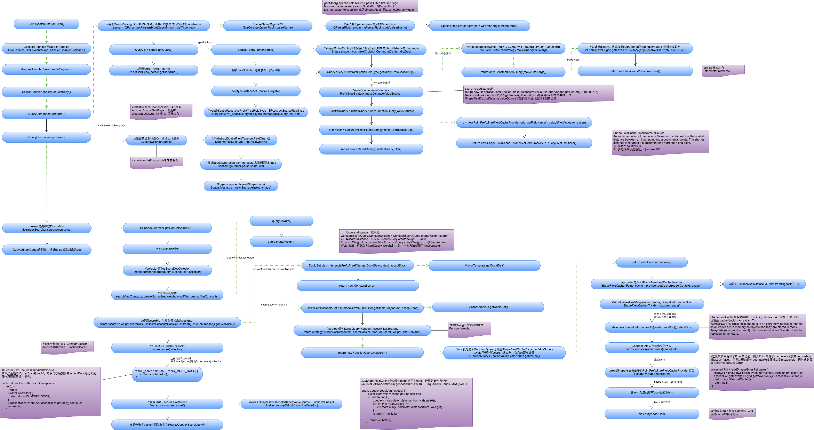
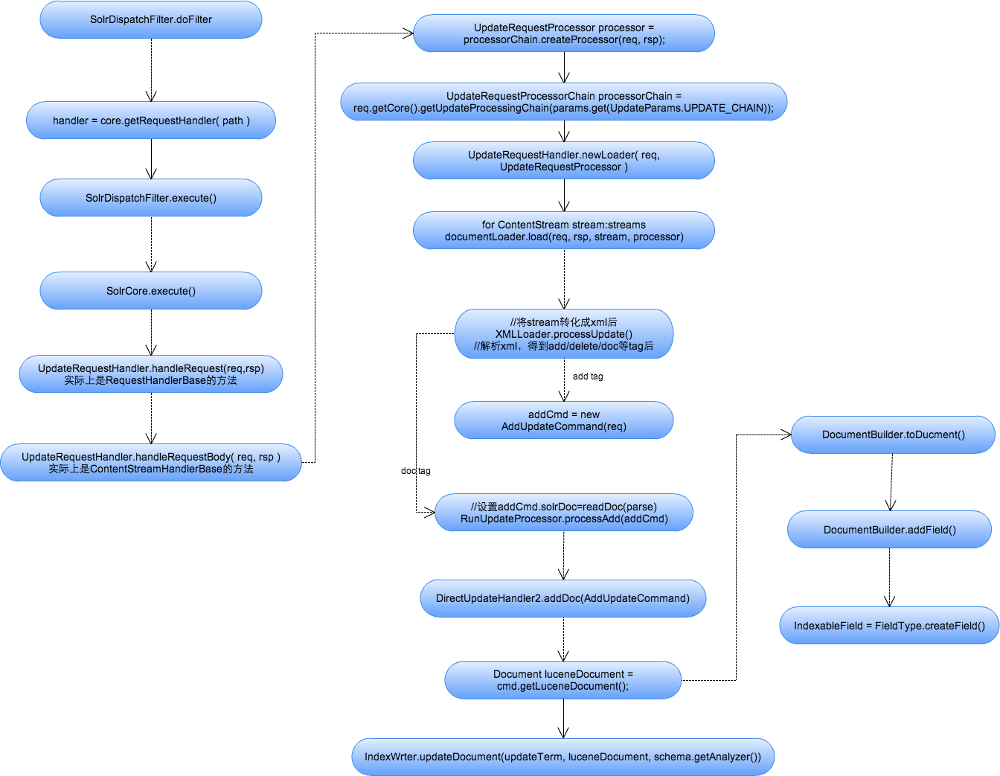
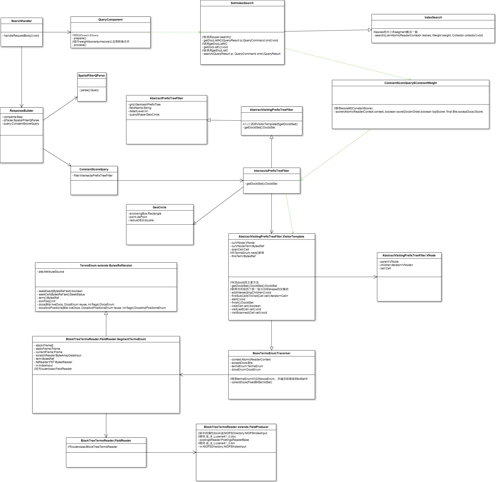

solr空间索引原理及源码分析
note:图片请右键 在新页签打开，可以放大看
solr的4.0-4.1版本使用GeohashField.createSpatialQuery(), 未使用IntersectsPrefixTreeFilter(继承于AbstractVisitingPrefixTreeFilter)。4.2版本开始使用IntersectsPrefixTreeFilter。4.2和4.3及以后的区别好像只是小改了一些，比如把Node对象换成Cell对象。
solr空间索引主要有两类GeohashPrefixTree(Geohash)与QuadPrefixTree(四叉树，对应笛卡尔分层策略)。分层其实取的就是前缀。
4.3开始geohash也引入了分层查询策略(这个有些不严谨，4.0-4.2虽然没使用IntersectsPrefixTreeFilter，但具体策略我还没有研究)，总体效果应该优于Quad(拿了一个多边形，geohash只要203个term，而quad要488个, 对于点来说geohash只要11个term，而quad要26个term)。应该是4.3开始作者按照quad优化了geohash。

GeohashPrefixTree与QuadPrefixTree的主要不同:
- maxLevels不同：geohash的maxLevels为11，quad的maxLevels为26。
- 通过distance获得相应的detailLevel不同
- 获得子Cell不同：geohash下一层有32个子Cell(编码为0-z), quad下一层有4个子Cell(编码为ABCD。A:左上，B：右上，C:左下，D:右下)
由于两种方法的大致思想一致，所以下文重点介绍geohash。
重要属性
schema.xml中的空间索引类型的配置：
<fieldType name="location_jts" class="solr.SpatialRecursivePrefixTreeFieldType"
spatialContextFactory="com.spatial4j.core.context.jts.JtsSpatialContextFactory"
distErrPct="0.025"
maxDistErr="0.000009"
units="degrees"/>
- SpatialRecursivePrefixTreeFieldType
用于深度遍历前缀树的FieldType，主要用于获得基于Lucene中的RecursivePrefixTreeStrategy。
- JtsSpatialContextFactory
当有Polygon多边形时会使用jts(需要把jts.jar放到solr服务的lib下)。基本形状使用SpatialContext (spatial4j的类)。 distErrPct
定义非Point图形的精度，范围在0-0.5之间，默认0.025。该值决定了非Point的图形索引或查询时的level(如geohash模式时就是geohash的长度)。当为0时取maxLevels，即精度最大。计算level的方法是 Shape中心到其外包矩形的最远corner的距离 * distErrPct (这块理论依据还没研究…)。实现代码如下SpatialArgs.calcDistanceFromErrPct()返回distErr：public static double calcDistanceFromErrPct(Shape shape, double distErrPct, SpatialContext ctx) {
if (distErrPct < 0 || distErrPct > 0.5) { throw new IllegalArgumentException("distErrPct " + distErrPct + " must be between [0 to 0.5]"); } if (distErrPct == 0 || shape instanceof Point) { return 0; } Rectangle bbox = shape.getBoundingBox(); //Compute the distance from the center to a corner. Because the distance // to a bottom corner vs a top corner can vary in a geospatial scenario, // take the closest one (greater precision). Point ctr = bbox.getCenter(); double y = (ctr.getY() >= 0 ? bbox.getMaxY() : bbox.getMinY()); double diagonalDist = ctx.getDistCalc().distance(ctr, bbox.getMaxX(), y); return diagonalDist * distErrPct; }
然后由GeohashPrefixTree.getLevelForDistantce(distErr)来求得geohash精度。
public int getLevelForDistance(double dist) {
if (dist == 0) //Point时dist=0
return maxLevels;//short circuit
final int level = GeohashUtils.lookupHashLenForWidthHeight(dist, dist);
return Math.max(Math.min(level, maxLevels), 1);
}
- maxDistErr/maxLevels
定义索引数据的最高层maxLevels，默认是0.000009即1米(geohash11位)，直接决定了Point索引的term数。
maxLevels优先级高于maxDistErr,即有maxLevels的话maxDistErr失效。详见SpatialPrefixTreeFactory.init()方法。
不过一般使用maxDistErr。
- worldBounds
世界坐标值：”minX minY maxX maxY”。 geo=true即geohash模式时，该值默认为”-180 -90 180 90”。geo=false即quad时，该值为Java double类型的正负边界，此时需要指定该值，设置成”-180 -90 180 90”。Solr spatial的类框架图

各类作用说明：
lucene实现的：
- SpatialStrategy: 空间索引的核心，用来创建 索引域 以及 查询Query、查询Filter，以及用于score=distance等的打分策略(DistanceValueSource)。
- SpatialPrefixTree: 其子类为GeohashPrefixTree和QuadPrefixTree。其主要用于获得索引Level、深度遍历获得与目标Shape相交的Cell，以及将token字符串与Cell间的相互转换。GeohashPrefix.GhCell (下层32个子结点，因为geohash每位代表5bit，2^5=32, 经度3bit，纬度2bit)和QuadPrefixTree.QuadCell(下层4个子结点)均是用于获得与目标Shape相交的下一层子cell。
- SpatialPrefixTreeFactory:初始化maxLevels, 通过makeSPT()方法创建SpatialPrefixTree对象(grid)
spatial4j/jts实现的：
- SpatialContext: 用于获得距离计算Calculator以及解析形状等。其属于spatial4j包中，该包中还有各种Shape及判断各Shape间的相交情况。JtsSpatialContext(jts包)用于处理多边形等情况。
solr实现的：
- AbstractSpatialFieldType:用于获得相应的Strategy，获得相应的索引域、查询Query。
创建空间索引
索引结构
geohash模式的索引结构分成Point和非Point。下图为索引结构示意图(为方便起见只画了6层, 蓝色为Point，黄色为非Point)：
note: d=5的未画出的其他分支…

- Point
如经纬度41.79452,123.41555，对应的geohash为wxrvb2kqexu(maxLevels=11), 则其对应的term有11个(如w、wx、wxr、wxrv…，存储了前缀，牺牲索引加快查询速度)。 - 非Point
如Polygon。非Point的索引中有leaf叶子结点的概念，比如wtxrvb包含在Polygon中，则该cell为leaf，生成term时会有wtxrvb与wtxrvb+(+是leaf的标志)。
空间索引创建流程

说明：Point的term就是把其geohash:wtxrvb变成w、wt、wtx、wtxr、wtxrv、wtxrvb，Point的索引Level为maxLevels(即11位)。下面主要说明非Point的term创建过程。
1、将空间索引域的shapeStr解析成相应的Shape(复杂Shape如Polygon要使用JTS中的WTKReader来解析)，以下拿Polygon为例。
2、计算目标Polygon的索引Level,即根据Polygon的外包矩形以及distErrPct算出distErr，再调用SpatialPrefixTree.getLevelForDistance(distErr)得到索引detaiLlevel。
3、得到与目标Polygon相交(即有交集或在Polygon内)的所有子Cell。主要做法是从root=WorldCell开始进行深度遍历并对各子树进行前枝：每下一层有32个子结点，然后判断各子结点与Polygon的相交情况。判断相交时简单的可以用spatial4j包来计算，复杂的需要用JTS。判断相交主要是先与Polygon的外包矩形判断是否相交(提高效率)，如果相交，再与Polygon进行进一步相交判断。
a、不相交的则舍弃该Cell(其子Cell也不会被遍历到)。
b、包含在目标Polygon中，则设置该Cell为叶结点(term末尾加+)， 添加到result中，其子Cell不再遍历。
c、intersect以及contain Polygon: 将Cell添加到result中，然后继续深度遍历其子Cell，获得更精确的Cell。
d、当cell的token长度达到detailLevel时，则到达最底层，标记为叶结点，添加到result中，停止该Cell的遍历。如果某个Cell的32个子Cell都是叶结点，则删除这32个子结点，把该Cell设置成叶结点。(这里直接影响了查询时的误差，会多取数据。即查询到detailLevel的geohash时，其实不包括该多边形，但也把多边形算进去了)
4、得到Filed，得到的Cell列表都放在CellTokenStream中。
5、存储索引域与存储域。
下图为判断相交的示意图：

多边形索引一般会得到几百上千个term，大大增加了索引大小与创建时间，哎，一切都是为了查询…
空间索引查询
查询语法
q={!geofilt pt=45.15,-93.85 sfield=geo d=5 score=distance}
q={!bbox pt=45.15,-93.85 sfield=geo d=5 score=distance}
q=geo:"Intersects(-74.093 41.042 -69.347 44.558)"
q=geo:"Intersects(POLYGON((-10 30, -40 40, -10 -20, 40 20, 0 0, -10 30)))"
查询方法
我们可以像创建空间索引的方法那样得到与查询Shape相交的所有子Cell，然后再与term进行匹配，但这有两个问题：一是很多没有数据的区域也会被深度遍历，二是得到的子Cell与term进行匹配比较麻烦(比如一个精度很大的多边形查询，其获得了很多前缀，不知道该拿哪些前缀去匹配相应的term从而获得docId)。
solr的查询策略：利用了索引term的字典有序可以有效地对上面的深度遍历进行剪枝，term的顺序和深度遍历的Cell的顺序是一致的。具体流程如下图：

说明：
1、获得空间索引域的第一个域，深度遍历root=WorldCell开始，找到与查询Shape相交的子Cell。
2、开始深度遍历, 找到遍历的下一个结点，判断当前Cell与当前term的大小关系：
a、当前Cell < term : 则跳过该Cell， 因为term是按字典序顺序取的，在当前term之前的Cell对应不到数据。
b、当前Cell > term : 当前term已经匹配完成(因为以后遍历的Cell肯定都比当前term大)，定位到下一个>=Cell的最小term，继续遍历Cell。
c、当前Cell = term : 判断当前Cell是否还要继续深度遍历，即如果Cell包含在查询Shape内，或者Cell已经达到了查询Shape的detailLevel层时，则当前Cell遍历结束，将当前term上的docId都取出来；否则继续深度遍历获得当前Cell的与查询Shape相交的子Cell。同时取下一个term。这里有个特殊情况是当term是以+结尾即leaf结点时且Cell长度和term长度一样长时(长度比较不包括+)，说明该数据是非Point索引时的叶结点，再深度遍历已经也对应不上相应的term，所以就把该term对应的非Point docId都取出来，然后取下一个term。
不断重复第2步直到term取完或者所有树结点都被遍历完。
下图是查询策略的示意图：

空间索引查询流程

上图以geofilt查询为例，其中分成有score=distance和无score=distance两种情况。
- 先介绍不需要score的情况：
1、解析查询，生成Query树：获得相应的QParse, 对geofilt进行语法解析，获得geofilt的各个参数，并且获得相应的查询Query(ConstantScoreQuery)包括相应的Filter(IntersectsPrefixTreeFilter)，其中也计算了查询Shape的一些属性，如最大索引长度detailLevel。
2、查询：SolrIndexSearch.search()进行创建Weight树和Score树。利用IntersectsPrefixTreeFilter得到符合条件的docIdSet(调用了前面的VistorTemplate深度遍历策略)。由于不需要score，所以Score返回的是ConstantScorer。 - 需要score的情况(大坑，要缓存所有term对应的docId及对应的geohash中心点)，只说明score=distance,score=recipDistance图中已经说明：
基本流程和上面一致。说明下主要不同的地方： - Query对象：其创建的是FilteredQuery，其中有几个属性关系到打分：
a、ShapeFieldCacheDistanceValueSource: 用于生成FuncitonValues对象来给各个doc打分，只用于计算Point类的doc，非Point类的doc都打180分(即非Point都是最近的)。其主要属性PointPrefixTreeFieldCacheProvider缓存了所有Point类doc的docId–>point所在geohash的中心点(大坑之所在)。 b、FunctionQuery:其中包括了FunctionWeight、AllScorer、FunctionValues等主要用于空间索引的打分操作。 - Scorer.score()调用的是AllScorer.score(): 解析出符合条件的docId，然后通过ShapeFieldCacheDistanceValueSource生成的FunctionValues得到docId对应的中心点，计算与查询Shape中心的距离来作为score。再放到优先队列中进行排序，从而实现按score排序的功能。
一些主要类说明：
- FunctionValues: 其floatVal(docId)用于计算两点距离(非Point默认最近)，调用provider的cache来获得各个docId的中心点坐标。
- ShapeFieldCacheDistanceValueSource: 生成的FunctionWeight。
- ShapeFieldCache(大坑,文档里说以后会替换这块):缓存了docId—>其term对应的Cell的中心点。cache[docId]=ArrayList。
- PointPrefixTreeFieldCacheProvider:管理ShapeFieldCache。(只支持Point)
其他
在研究solr及lucene时所画的一些图
solr update流程

solr空间查询类图

lucene write类图